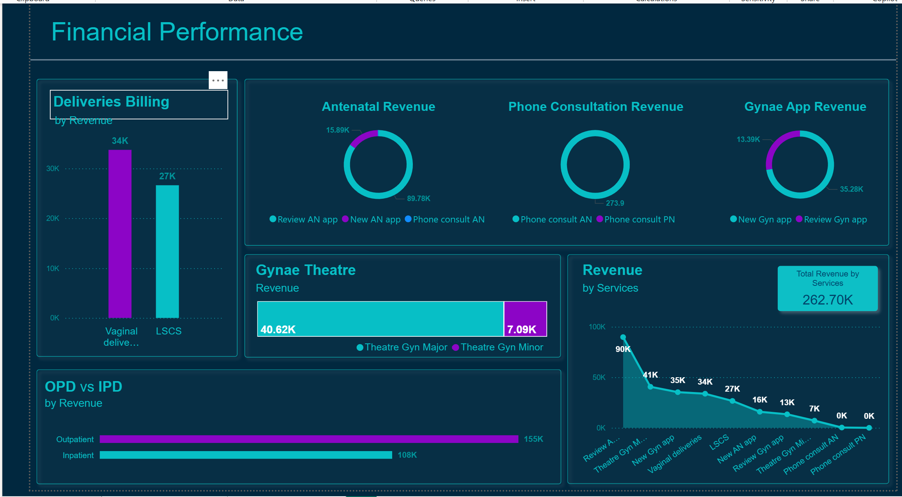

Enterprise Data Governance Dashboards
Designed 17+ governance dashboards for data quality, issue management and reconciliation across enterprise platforms (Power BI & ThoughtSpot).
Data Analyst • Power BI • ThoughtSpot • GenAI • Data Solutions • Analytics Platforms
I’m a Data Analyst with 8+ years of experience turning raw data into meaningful insights across supply chain, operations, finance, and banking. I specialize in building end-to-end analytics solutions using Power BI, ThoughtSpot, SQL, and modern data platforms — along with automation workflows powered by Power Automate and GenAI agents.
Across roles at Kohler Co., Bank of New York, Husqvarna, and Epiroc Group, I’ve partnered with cross-functional teams to design dashboards, reconciliation frameworks, data governance reporting, and operational analytics that enable leaders to make faster, smarter decisions.
My work spans spend analytics, procurement, inventory planning, demand forecasting, MES/SQL process parameter insights, and large-scale ERP migration projects where I worked hands-on with high-volume transactional datasets.
I enjoy creating scalable reporting solutions — from ThoughtSpot search-driven insights to Power BI enterprise dashboards with automated refresh pipelines and Power Automate workflows. Whether it's designing data governance KPIs, building reconciliation logic, or streamlining business processes, my goal is always the same: turn data into clarity, automation, and measurable business impact.
What motivates me most is building from scratch — taking a blank whiteboard or early prototype and transforming it into a working product that teams genuinely rely on. I love collaborating with diverse stakeholders, solving complex problems, and creating tools that bring structure, transparency, and efficiency to the business.
Power BI dashboards, automation solutions and AI-driven analytics.
Designed 17+ governance dashboards for data quality, issue management and reconciliation across enterprise platforms (Power BI & ThoughtSpot).

Connected MES & SQL to Power BI to audit process failures, identify bottlenecks and reduce downtime.
Designing enterprise data governance dashboards and GenAI agents to automate KPI monitoring and validation.
Built Power BI reports for procurement & operations, led digitalization efforts and canvas app rollouts.
Power BI reporting for order management, inventory analytics and ERP migration support.
If you'd like to see more dashboards or collaborate, reach out.